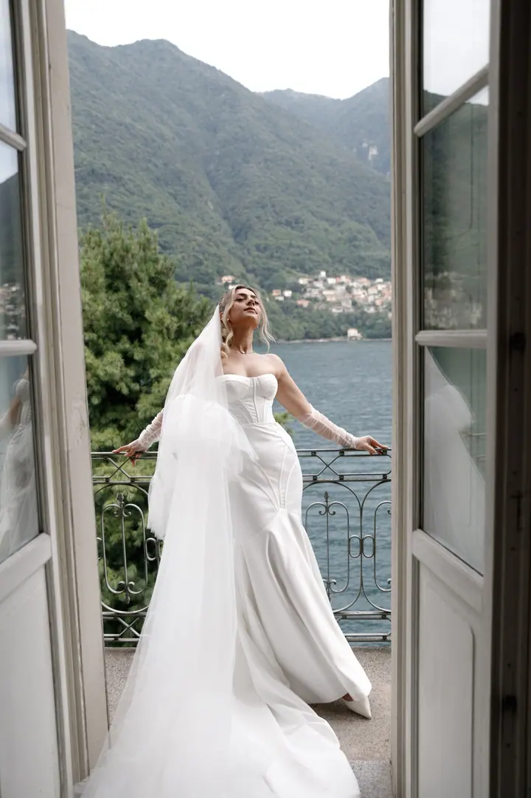
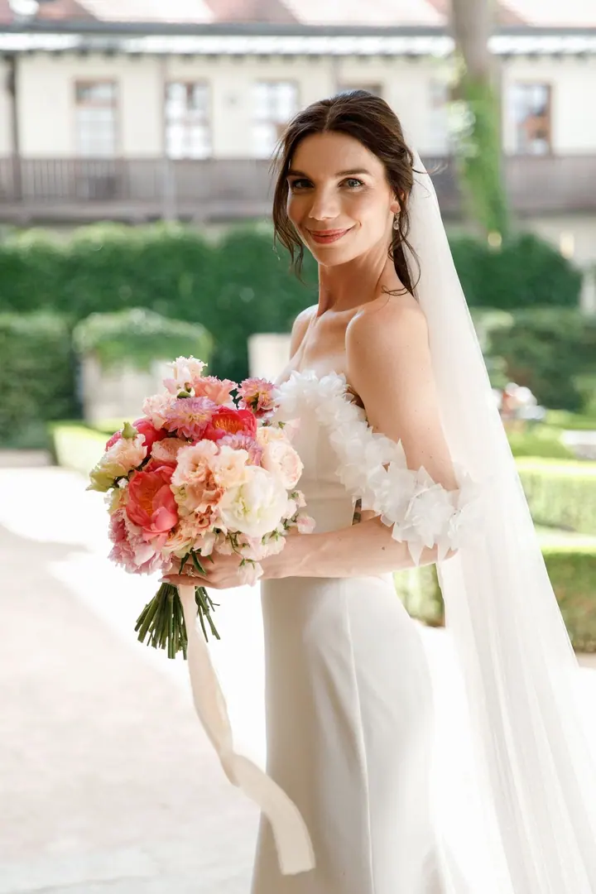
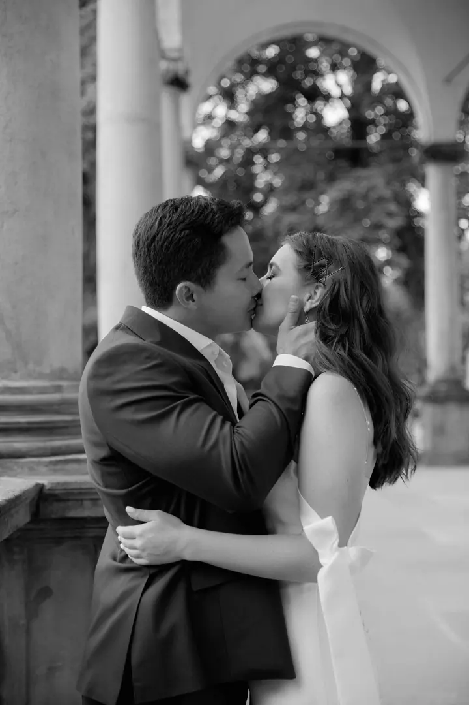
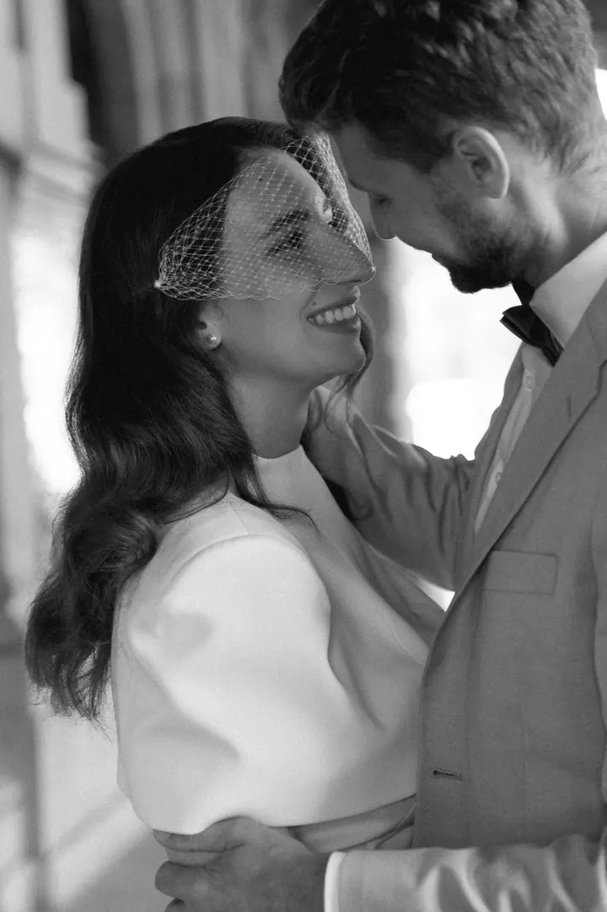
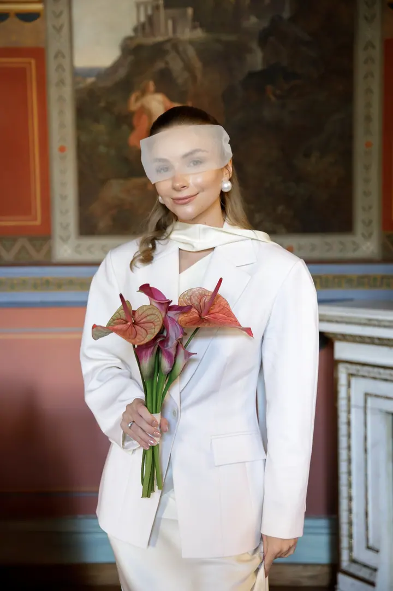
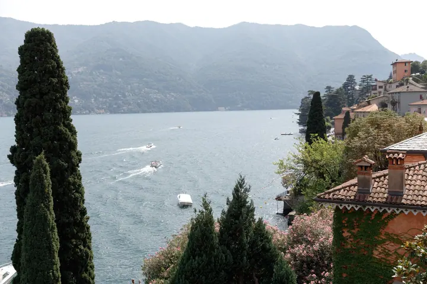

Svatby
Fotím svatby v Praze, ve Francii a ve Španělsku. Zachycuji celý den od přípravy nevěsty přes obřad až po první tanec, barevně i černobíle.





Jmenuji se Marina Bida a fotím svatby v Praze, ve Francii a ve Španělsku. Ráda pracuji s denním světlem, starými zahradami a vilami a střídám barvu s černobílou. Nejvíc mě baví chvíle, kdy na fotoaparát úplně zapomenete.
Více o mně
„Svatba, ke které se budete rádi vracet.“
— Marina Bida
Fotím svatby v Praze, ve Francii a ve Španělsku. Zachycuji celý den od přípravy nevěsty přes obřad až po první tanec, barevně i černobíle.
Jsem svatební fotografka a fotím v Praze, ve Francii a ve Španělsku. Svatba je pro mě den plný drobných gest, pohledů a detailů, které si zaslouží stejnou péči jako velké chvíle.
Fotky skládám tak, aby působily čistě a nadčasově. Některé chvíle nechávám v barvách, jiné převádím do černobílé, aby vynikla emoce. Fotím přípravy, obřad, portréty i večerní oslavu a nezapomínám ani na místo, kde se to všechno děje.
Pokud plánujete svatbu doma nebo v zahraničí, ráda se s vámi potkám a projdeme si, jak by váš den mohl vypadat.
Napište mi datum a místo svatby. Ověřím, jestli mám volno, a pošlu vám podrobnosti.
Domluvíme se, jak si den představujete, co je pro vás důležité a jak bude vypadat harmonogram.
Jsem s vámi od příprav až po večerní oslavu. Fotím nenápadně a na portréty si vás vezmu jen na chvíli.
Fotky pečlivě vyberu a upravím, barevně i černobíle, a předám vám je v online galerii.
Ano. Kromě Prahy fotím svatby také ve Francii a ve Španělsku. Napište mi, kde se budete brát, a domluvíme se.
Cena závisí na délce focení a místě konání. Napište mi pár informací o vaší svatbě a pošlu vám nabídku.
Obojí. Většinu fotek dostanete barevně a vybrané chvíle navíc i v černobílé verzi tam, kde to fotce sluší.
Vyplňte formulář na webu nebo zavolejte na +420 608 373 983. Termín je rezervovaný po vzájemné domluvě.